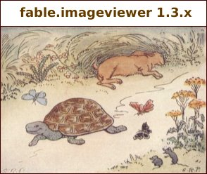

Imageviewer is a program written in Java by Andy Gotz of ESRF. It is used to display diffraction images and their metadata.
Imageviewer is part of the Fable series of graphical applications based on Eclipse.
Imageviewer requires Python 2.5 and fabio a Fable package to read files. Fabio is packaged as part of Imageviewer but Python not. It is up to the user to download and install Python 2.5 should they not have it.
Help is available on the following topics :